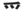

| EI |
Fonzie's trademark "EYYYY!" demonstrates that he is as cool as a shadow on a hot day |
|
We stood in the shadow of Rapunzel's enormous hair and watched the scenery. |
| かげ |
shadow, literally
★★★★★ |
| 撮影 |
a photoshoot or movie shoot.
★★★☆☆
|
| に 影響 |
influence
★★★☆☆
influence (You don't say "x influences Y," you have to say "Y recieves X's influence." (YYYはXXXの影響を受けた） |
| Meaning | Hint | Radical | |
|---|---|---|---|
| 彩 | hue | NEST |  |
| 影 | shadow | SUN | 陽 |
The NEST has a brown hue,
But the SUN makes shade for me and you.
| Meaning | Hint | Radical | |
|---|---|---|---|
| 陰 | shady | TOWN |  |
| 影 | shadow | HAIR |  |
That part of TOWN is shady so don't go there.
Your HAIR casts a shadow on your face.
|
shade
影 陰 |
 KANJIDAMAGE
KANJIDAMAGE